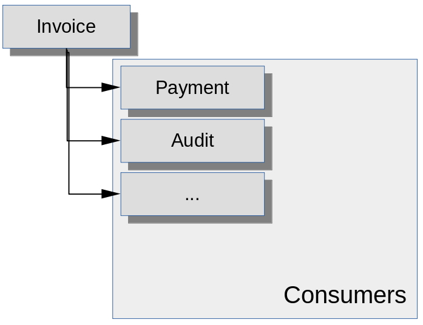
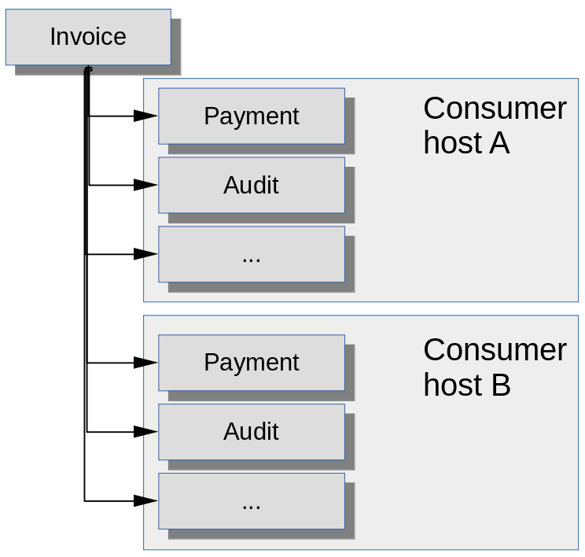
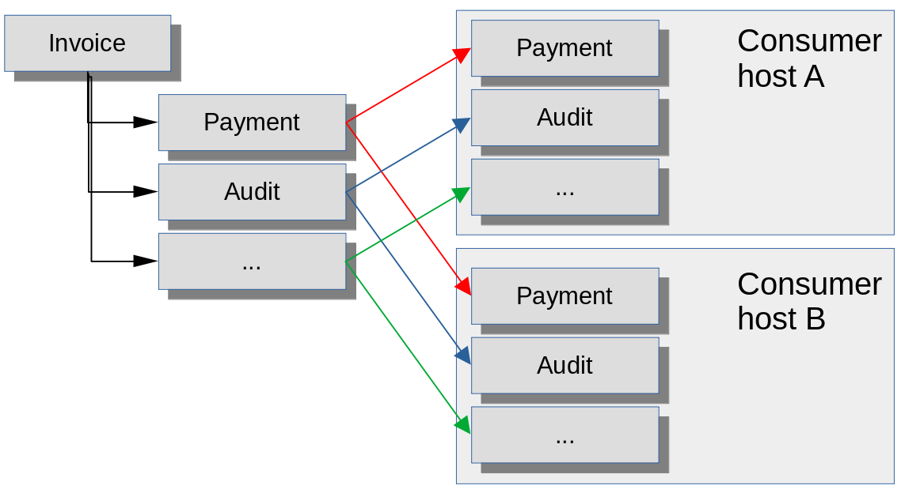

Getting to grips with JMS shared subscriptions

The JMS specification describes two kinds of messaging operation: first-in, first-out (queue), and publish-subscribe (topic). These are by no means the only way we can envisage messaging working and, in fact, the notion of 'durable' publish-subscribe messaging blurs the line between a queue and a topic.
The JMS 2.0 specification introduced the notion of a 'shared subscriber', which blurs that line further. Many Java developers don't understand how shared subscribers are intended to work, and so don't understand why they don't behave as expected. The difference between a 'client ID' and a 'subscription name' seems to be particular poorly understood. In this article I describe shared subscribers by going back to the limitation in JMS 1.1 that they were introduced to address. I believe that, when this history is understood, the use and the limitations of shared subscriptions are quite comprehensible.
A lesson from history
We need first to understand why the JMS 1.1 topic subscription model was
inadequate. Consider the simple example in the diagram below. Invoice is a JMS topic, while Payment, Audit, etc.,
are subscribing applications. The logic is that for each published invoice,
a number of different applications have to see it, and to take some action.
JMS 1.1 topic semantics are that every connected topic subscriber gets a
copy of the message, which is exactly what seems to be
required here. We may also
want non- connected subscribers to get a copy of the message --
these are durable subscribers. JMS 1.1 supports
both durable and non-durable subscribers, but the difference between them
is not relevant to how message are distributed. What's relevant here
is that each subscriber gets a
copy of each message published to the Invoice topic.

This strategy works fine, so long as there is only one 'Payment' subscriber, one 'Audit' subscriber, and so on. But what happens if we want some measure of fault tolerance? Or what if we want to distribute the 'Payment' load or the 'Audit' load between multiple consumer hosts? Both fault tolerance and load sharing can be accomplished by duplicating the number of subscribers and, at first glance, it looks like we need a topology like this:

Unfortunately this does not work and, in JMS 1.1, there's no way to make it work. The message broker has absolutely no way to distinguish between subscribers that need copies of the message, and subscribers that are intended to share copies for load balancing purposes. In practice, there will be duplication of work, because a subscriber can't tell whether any other subscriber got the message it just received.
Some developers get confused about this point because subscribers do have a client ID. However, the client ID is to control durability, not message distribution. The client ID tells the message broker which clients it has to store messages for. It can't be used to group clients for the purposes of controlling message distribution. Why? Simply put, only one client with a specific client ID can connect to the broker at a particular time. The client ID controls how messages are retained for a specific client, not how they are distributed between multiple, competing consumers.
Because we need load sharing and fault tolerance in an enterprise set-up, the lack of support in JMS is not something that we can just live with. So, in practice, different message brokers implemented proprietary, non-specified ways to interact with clients. Apache ActiveMQ, for example, provides 'virtual topics', which are essentially topics that can redirect to queues. The problem with using these facilities is tha they create vendor-lock. In addition, because they were outside the specification, it was difficult to know whether unexpected behaviour was a defect or not -- there was nothing to assess it against.
JMS 2.0 to the rescue
JMS 2.0 introduces the concept of a shared subscription. So there are now four types of topic consumer: unshared non-durable, unshared durable, shared non-durable, and shared durable. The 'unshared' varieties are exactly as they were in JMS 1.1. Every unshared non-durable consumer gets a copy of the message if it is connected, and every unshared durable consumer gets a copy whether it is connected or not. So far, so familiar.
A shared subscription, however, is a named subscription on the topic. Every subscriber that uses the same name on the same topic is assumed to be there for the purposes of message sharing. These subscribers form a collaborating consumer group. When a message arrives on the topic, the broker must send one copy to each non-shared subscriber, and one copy to one client only, that has a particular subscription name. So shared consumers will either compete for messages, or the broker will allocate messages to them according to some policy.
The diagram below attempts to show this situation.

The red, green, and blue lines show alternative paths for message distribution. So the broker will deliver a copy of each message to each shared subscription, and the shared subscription will deliver to only one of the brokers in the same group. That way, the two consumer hosts get a share of the work, and can stand in for one another in a failure, without receiving any duplicated messages.
Note that the subscriptions described above can be durable or non-durable -- the same diagram applies in both cases. However, in this (shared subscription) scenario, consumers do not need a client ID. Why? This is a common point of confusion, because developers often don't understand what the client ID is for.
In the JMS 1.1 model (or the unshared subscription of JMS 2.0), the broker must keep track of every durable consumer, and deliver a copy of the message to each one. It needs to know the client ID, to track which messages have to be stored for which clients.
With shared subscribers, however, the broker doesn't care where the message goes. It knows that it has to store each message for a specific subscription, but it doesn't care which client actually gets the message. So long as some client consumes the message for a particular named subscription, the broker has done its job. The broker is under no obligation to distribute the messages to clients in any particular pattern.
Implications in practice
Most modern JMS-compliant message brokers support shared subscriptions. In a simple, single-broker set-up, they generally do exactly what JMS 2.0 created them to do: they allow groups of consumers to share the messages delivered to a topic.
In a broker cluster, however, things are not as simple. Shared subscriptions have the same problem that queues have: it's not obvious how messages are to be distributed across the cluster.
Suppose that a message arrives on Invoice, and there are three
brokers in the cluster. Suppose further that there is a subscriber for
Payment connected to each broker. Which of the consumers
in that group should get the message?
Logically, it could be any one of them. Remember that the broker is not obliged to ensure any particular distribution of messages between consumers with the same subscription. The easiest implementation is probably to route the message from the broker where it arrived, to each of the other brokers in turn. So if messages are arriving on Broker 1, that broker might keep the first for itself, send the next to Broker 2, and the next to Broker 3, and so on. Since there are consumers for that subscription attached to each broker, the consumers will get a fair share of the load.
But...
The broker is not required to distribute load equally. So why should Broker 1
route any messages to Broker 2, when it has a consumer for Payment
attached to itself? Network traffic is minimized by the broker simply
routing to the message to its own consumer, as is the load involved in
storing and forwarding messages.
But we can't send all the incoming messages to the same consumer -- or can we? If there is a fair distribution of incoming messages between brokers, there's something to be said for favouring the locally-connected consumer on each broker. We only want to forward the message to a different broker if there are no locally-connected clients to consume it.
But if the messages are durable, how can we ensure that this is the case? The whole purpose of durable subscription is to retain a copy of the message for consumers that might be away for some time. A consumer might go away, and then attach to a different broker later. So, in some circumstances, mightn't it be better for the broker to try to share the messages more evenly around the cluster, in the expectation that some consumers might be away temporarily?
These considerations mean that there is really no way for a broker cluster to distribute messages between durable subscribers in an optimal way in all scenarios. In practice, it might not even try. At the time of writing, Apache Artemis does not attempt to work out the best way to distribute messages between durable subscribers -- it just sends them to each broker in turn, whether or not any subscriber is connected.
Ordinary message queues expose the same problem, but the consequences are usually easier to control, because ordinary queues are not part of a broader distribution scheme. A shared durable subscription is a kind of queue within a topic, so it requires that distribution be optimised in line with both queue-like and topic-like operations -- something that is not at all straightforward.
Closing remarks
Shared subscriptions exist to solve a very specific problem that existed in JMS 1.1. They work well in simple set-ups, but it can be hard to make them work well in a complex, clustered environments. The fact that the JMS specification has nothing to say about how they should be implemented in such environments means that different brokers may behave in suboptimal ways or, worse, in ways that differ from vendor to vendor.